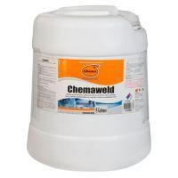
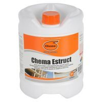
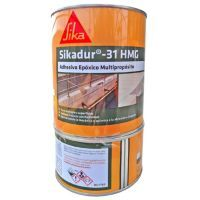
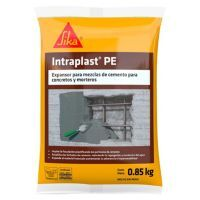
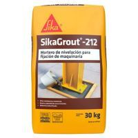
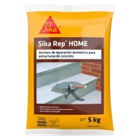
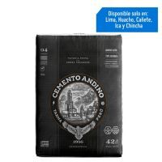

Cementos y complementos


S/.10.90
TOPEX Estuco Uso Exterior 40kg
Agregar al carrito
S/.330.90
TOPEX Hormigón Secado Rápido 40kg
Agregar al carrito
S/.10.90
TOPEX Mortero Pegador Ladrillo 40kg
Agregar al carrito


S/.7.99
TOPEX Mortero de Reparación 5kg
Agregar al carrito
S/.14.90
TOPEX Nivelador de Pisos 25kg
Agregar al carrito

S/.38.90
TOPEX Mortero de Anclaje Nivel 30kg
Agregar al carrito

CHEMA Adhesivo Chemaweld 5gl
S/ 535.00 C/U
S/.535.00
CHEMA Adhesivo Chemaweld 5gl
Agregar al carrito

CHEMA Chema Estructural 1GL
S/ 92.00 C/U
S/.92.00
CHEMA Chema Estructural 1GL
Agregar al carrito

SIKA Epóxico para Anclajes Sika Dur 31 x 1kg
S/ 75.00 C/U
S/.75.00
SIKA Epóxico para Anclajes Sika Dur 31 x 1kg
Agregar al carrito

SIKA Expansor Para Concreto y Mortero Sika Intraplast x 850gr
S/ 18.01 C/U
S/.18.01
SIKA Epóxico para Anclajes Sika Dur 31 x 1kg
Agregar al carrito

SIKA Mortero Autonivelante Sika Grout 212 x 30kg
S/ 143.5 C/U
S/.143.50
SIKA Mortero Autonivelante Sika Grout 212 x 30kg
Agregar al carrito

SIKA Mortero de reparación reforzado con fibras Sika Rep Home 5kg
S/ 17.00 C/U
S/.17.00
SIKA Mortero de reparación reforzado con fibras Sika Rep Home 5kg
Agregar al carrito

ANDINO Cemento Andino Ultra HS
S/ 28.60 C/U
S/.28.60
ANDINO Cemento Andino Ultra HS
Agregar al carrito